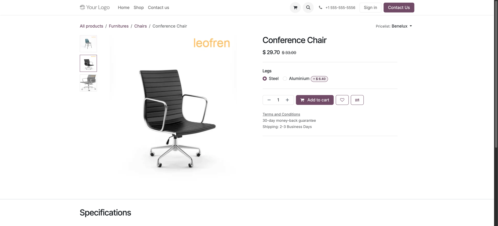

See it on your shop
Main image and gallery images, all branded the same way.
Product page gallery

Extra product images carry the same watermark as the main photo, both in the gallery and when shown full size.
Shop page

Every product card in your shop shows the watermarked image — no theme changes needed.